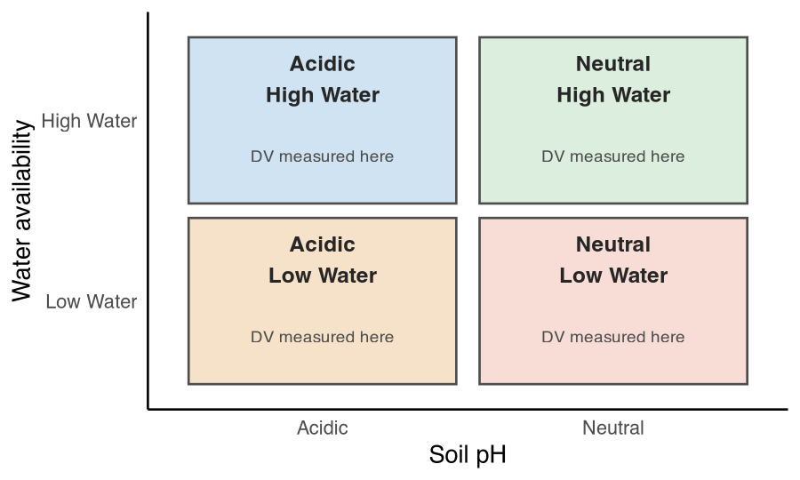
10 Factorial ANOVA
In science, outcomes rarely depend on just one thing. Climate, soil type, and water availability all act together to influence ecosystems in ways a single-factor design can’t capture. Factorial designs let us study several factors, and how they interact with each other, at once.
This chapter covers both halves of that. First, how to compute a factorial ANOVA, including a full by-hand walkthrough of the sums-of-squares arithmetic. Second, how to interpret the result. This can be tricky with multiple factors. When an interaction is present, it changes what every other number in your results table means.
10.1 Factorial basics
Imagine investigating the growth rate of a plant species, with independent variables like soil pH or water variability. Each added IV multiplies the number of conditions you can observe, and with it, the questions you can ask about how those factors work together. Consider the following example:
- 1 IV (with two levels)
How does soil pH affect plant growth?
- Independent Variable: Soil pH (Acidic vs. Neutral)
We have one IV (soil pH), with two levels (Acidic vs. Neutral). A t-test is appropriate here, since we are dealing with just two levels of our independent variable.
- 1 IV (three levels):
How does varying water availability impact plant growth?
- Independent Variable: Water Availability (Low, Medium, High)
Our single IV (water availability) has three levels (Low, Medium, High). You can’t run a t-test anymore. An ANOVA is appropriate here, given the variable has more than two levels.
- 2 IVs: IV1 (two levels), IV2 (two levels)
How do soil pH and water availability together affect plant growth?
- IV1 (Soil pH: Acidic vs. Neutral);
- IV2 (Water Availability: Low vs. High)
Now we have two IVs, soil pH and water availability, each with two levels. This is called a factorial design, and it’s easier to see what that means visually than to define it in words first. Take a look at Figure 10.1.
10.1.1 2x2 Designs
Figure 10.1 lays out our soil pH and water availability example as a grid.
Each combination of soil type and water availability creates a unique environment for the plants, giving four distinct scenarios to measure growth rates: 2 IVs, each with 2 levels, for 2x2 = 4 conditions total. The notation directly tells you the number of conditions.
10.1.2 Factorial Notation
Anytime all of the levels of each IV in a design are fully crossed, so that they all occur for each level of every other IV, we can say the design is a fully factorial design.
The notation system indicates the structure of the factorial design. Each IV gets a number representing its levels. Here are a few examples:
2x2: Two IVs, each with two levels (yields four unique conditions).
2x3: Two IVs, with the first having two levels and the second three, (yields six unique conditions).
3x2: Similar to the 2x3, but the first IV has three levels, and the second has two, also giving us six unique conditions.
4x4: Two IVs, each with four levels, resulting in sixteen conditions.
10.2 Pollution, flow, and stream life
The rest of this chapter uses one example throughout, so it’s worth setting it up carefully before any arithmetic starts.
The question. Streams are affected by pollution, but also by how fast the water moves. Fast-moving water flushes contaminants downstream and re-oxygenates the channel; slow water lets them sit. So pollution might do more damage in a sluggish stream than a fast one. But damage to what? We need to operationalize stream health.
The dependent variable is macroinvertebrate species count: how many distinct kinds of aquatic insects, snails, worms, and crustaceans live in a stream. This is a standard measure of stream health. These animals sit in the middle of the food web, many are pollution-sensitive, and they can’t flee a degraded stream the way fish can. More species present means a healthier stream.
The design. We run an experiment in artificial stream channels, each assigned one pollution condition and one flow rate. Figure 10.2 summarizes it.
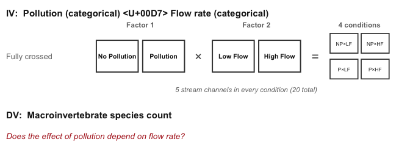
Two IVs, two levels each, so you should already be able to name this design: it’s a 2x2. Reading the schematic left to right also shows why the notation works the way it does. Crossing two levels with two levels is the multiplication that gives four conditions, and “fully crossed” simply means no cell is left empty. Figure 10.3 shows those same four conditions as a grid, with what gets measured in each.
That four-cell grid resembles the chi-square table from Chapter 7, and the difference between them is worth pinning down. There, the cells held counts of stream sites that already had a given land use and E. coli level; nobody put them there. Here, the cells are conditions we assign channels to, and within each one we then measure something else entirely, the species count. Same shape, opposite direction: one counts where units landed, the other measures an outcome where we placed them.
Predictions. No pollution plus high flow should support the most species; pollution plus low flow should support the fewest. The other two combinations are the interesting ones, and a one-factor study could never distinguish them: does pollution matter only when flow is low, with fast water washing its effect away entirely? Or does pollution hurt a stream no matter how fast the water moves? That’s exactly what an interaction test in a factorial experiment can tell us.
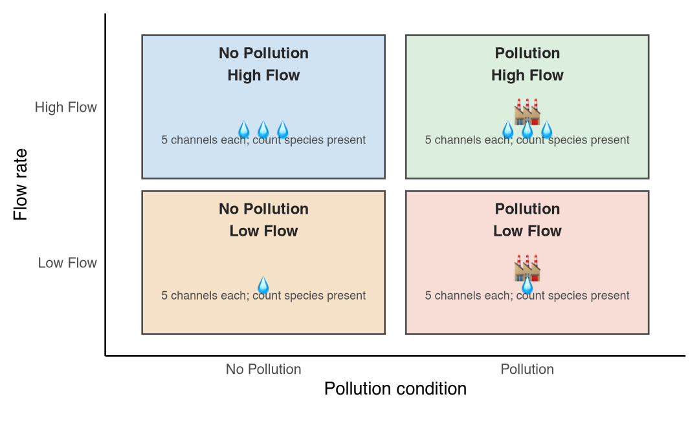
10.3 Why factorial designs matter
Factorial designs let us ask more nuanced questions than a single-factor study can. Suppose we ignored flow entirely and just compared polluted to unpolluted channels. That gives us a Pollution effect: the difference in species count between polluted and unpolluted water, shown in Figure 10.4.
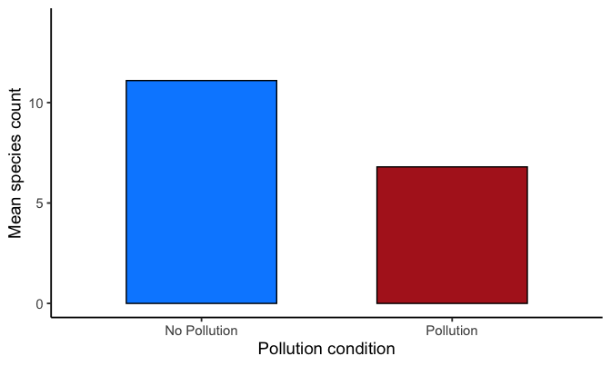
A factorial design lets us ask the follow-up question a one-factor design can’t: does the Pollution effect itself depend on flow? With flow rate added as a second IV, there are four condition means instead of two, so we can compare the Pollution effect within each flow condition, shown in Figure 10.5.
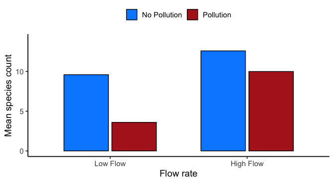
Under low flow, species count drops sharply with pollution (35 to 15, a difference of 20). Under high flow, the drop is much smaller (30 to 25, a difference of 5). The Pollution effect isn’t constant: it depends on flow rate, exactly as we suspected it might.
That’s the core payoff of a factorial design: it tells you what changes the size of an effect, not only whether the effect exists.
10.3.1 Main effects and interactions
Those two things, main effects and interactions, are what any factorial design gives you. How many of each depends on the number of IVs.
A main effect is the average difference associated with a single IV, one per IV. A 2x2 design has two IVs, so two main effects: one for Pollution and one for Flow. A 2x2x2 design has three main effects, one per IV; a 3x3x3 design also has three, since the number of main effects tracks the number of IVs, not their levels.
An interaction occurs when the effect of one IV depends on the level of another, which is exactly what Figure 10.5 shows: the size of the Pollution effect changed with Flow.
Equivalently, and this framing is worth holding onto because it’s what the arithmetic actually computes, an interaction is a difference between differences. The Pollution effect is a difference (polluted minus unpolluted). If that difference itself changes across Flow conditions, that’s an interaction.
The number of possible interactions scales with the number of IVs. A 2x2 design has exactly one interaction, the combined effect of the two IVs. A design with three IVs (A, B, C) has three two-way interactions (AB, AC, BC) and one three-way interaction (ABC).
10.4 What a 2x2 actually tests
Before computing anything, it’s worth being precise about what the three tests are, because a two-way ANOVA tests three effects and therefore has three null hypotheses:
- a main effect of pollution,
- a main effect of flow, and
- a pollution × flow interaction.
We can represent the four combinations of conditions and their mean species counts as:
| Pollution | Flow | Mean species count |
|---|---|---|
| No Pollution | Low Flow | \(\mu_{\text{NoPoll,Low}}\) |
| No Pollution | High Flow | \(\mu_{\text{NoPoll,High}}\) |
| Pollution | Low Flow | \(\mu_{\text{Poll,Low}}\) |
| Pollution | High Flow | \(\mu_{\text{Poll,High}}\) |
10.4.1 Hypotheses
Main effect of pollution
- Null (\(H_0\)): There is no effect of pollution on mean species count.
- Alternative (\(H_1\)): Pollution affects mean species count.
Main effect of flow
- Null (\(H_0\)): There is no effect of flow rate on mean species count.
- Alternative (\(H_1\)): Flow rate affects mean species count.
Pollution × flow interaction
- Null (\(H_0\)): The effect of pollution is the same at both flow rates. (In symbols: \((\mu_{\text{NoPoll,Low}}-\mu_{\text{Poll,Low}})=(\mu_{\text{NoPoll,High}}-\mu_{\text{Poll,High}})\).)
- Alternative (\(H_1\)): The effect of pollution differs across flow rates.
Plain English: Under the interaction null, the gap between polluted and unpolluted channels is the same whether the water is moving fast or slow. If that gap changes, for example if pollution does far more damage under low flow, you’ve found an interaction.
NoteNote: General form
You’ll sometimes see this written in abstract terms, with “Factor A” and “Factor B.” For example: \(H_0: (\mu_{A1,B1}-\mu_{A2,B1})=(\mu_{A1,B2}-\mu_{A2,B2})\). It’s the same logic: just replace A and B with your own variables.
10.5 What the ANOVA is really comparing
Recall from earlier: an interaction is a difference between differences. Here’s that idea with real numbers, using the four condition means directly, before we touch a single sum of squares.
| Pollution effect, Low Flow | Pollution effect, High Flow | Difference of differences |
|---|---|---|
| 6 | 2.6 | 3.4 |
Under low flow, the Pollution effect (no-pollution mean minus pollution mean) is 6. Under high flow, it’s 2.6. Those two numbers aren’t the same, so the Pollution effect isn’t constant across Flow conditions, which is exactly what an interaction means. The gap between them, 3.4, is a first, informal look at the interaction itself. Whether a gap that size is more than chance would produce is what the formal test below settles.
CautionWarning: If your design were repeated measures instead
Here each condition uses a different set of stream channels, a between-subjects design. Had the same channels been measured under all four conditions, this identical interaction test could be computed as a paired \(t\)-test on difference scores, agreeing exactly with a repeated-measures ANOVA (\(t^2=F\)).
10.6 Computing a factorial ANOVA by hand
In our between-subjects 2x2 design, different stream channels appear in each condition: 5 channels per condition, 20 channels total, no repeats. The logic is the same as the one-way ANOVA in the last chapter: partition the total variance into parts. For a 2x2 design, there’s now one more part, the interaction:
\[SS_\text{Total} = SS_\text{Effect IV1} + SS_\text{Effect IV2} + SS_\text{Effect IV1xIV2} + SS_\text{Error}\]
The tables below build up each piece the same way the one-way ANOVA chapter did: one row per channel, showing what that channel’s score gets replaced with, its distance from the grand mean, and that distance squared.
10.6.1 SS Total
\(SS_\text{Total}\) captures all of the variation in the data: the difference between each channel’s score and the grand mean, squared and summed. The table shows the first few channels and the last, since the pattern is the same all the way down.
| Pollution | Flow | Species | Diff | Diff Squared |
|---|---|---|---|---|
| No Pollution | Low Flow | 10 | 1.05 | 1.1 |
| No Pollution | Low Flow | 8 | -0.95 | 0.9 |
| No Pollution | Low Flow | 11 | 2.05 | 4.2 |
| ... | ... | ... | ... | ... |
| Pollution | High Flow | 12 | 3.05 | 9.3 |
| Sums | 179 | 0 | 242.9 | |
| Means | 8.95 |
The mean of all 20 scores is the grand mean, 8.95. The Diff column holds every channel’s distance from it; Diff Squared squares those distances so they don’t cancel (the same reason we squared deviations for the one-way ANOVA). Summing the squared column gives \(SS_\text{Total} = 242.9\).
10.6.2 SS Pollution
\(SS_\text{Pollution}\) isolates the variation caused by pollution condition alone: replace every score with its own pollution-condition mean, then find that mean’s distance from the grand mean.
| Pollution | Flow | Species | Group Mean | Diff | Diff Squared |
|---|---|---|---|---|---|
| No Pollution | Low Flow | 10 | 11.1 | 2.15 | 4.62 |
| No Pollution | Low Flow | 8 | 11.1 | 2.15 | 4.62 |
| No Pollution | Low Flow | 11 | 11.1 | 2.15 | 4.62 |
| ... | ... | ... | ... | ... | ... |
| Pollution | High Flow | 12 | 6.8 | -2.15 | 4.62 |
| Sums | 179 | 0 | 92.4 |
Every no-pollution channel is replaced by the no-pollution mean, 11.1; every pollution channel by the pollution mean, 6.8. Squaring and summing those means’ distances from the grand mean gives \(SS_\text{Pollution} = 92.4\): the variation explained by pollution condition alone.
10.6.3 SS Flow
\(SS_\text{Flow}\) works the same way, grouping by flow rate instead of pollution condition.
| Pollution | Flow | Species | Group Mean | Diff | Diff Squared |
|---|---|---|---|---|---|
| No Pollution | Low Flow | 10 | 6.6 | -2.35 | 5.52 |
| No Pollution | Low Flow | 8 | 6.6 | -2.35 | 5.52 |
| No Pollution | Low Flow | 11 | 6.6 | -2.35 | 5.52 |
| ... | ... | ... | ... | ... | ... |
| Pollution | High Flow | 12 | 11.3 | 2.35 | 5.52 |
| Sums | 179 | 0 | 110.4 |
Every low-flow channel is replaced by 6.6; every high-flow channel by 11.3. This gives \(SS_\text{Flow} = 110.4\).
10.6.4 SS Interaction
The interaction is the one genuinely new piece a factorial ANOVA adds. It asks: do the four individual condition means behave differently than the two main effects alone would predict?
Take the Low Flow condition: its own mean was 6.6. If pollution’s effect were the same regardless of flow, both pollution subgroups within Low Flow should also average close to that. They don’t: the no-pollution/low-flow mean is 9.6, well above it, and the pollution/low-flow mean is 3.6, well below it. That gap, variance the two main effects can’t explain on their own, is what the interaction captures.
To compute it, replace each score with its own condition mean, then subtract that channel’s pollution-group mean and flow-group mean, and add back the grand mean once (to avoid subtracting it twice):
\[\bar{x}_\text{condition} - \bar{x}_\text{Pollution group} - \bar{x}_\text{Flow group} + \bar{x}_\text{Grand mean}\]
| Pollution | Flow | Species | Condition Mean | Diff | Diff Squared |
|---|---|---|---|---|---|
| No Pollution | Low Flow | 10 | 9.6 | 0.85 | 0.72 |
| No Pollution | Low Flow | 8 | 9.6 | 0.85 | 0.72 |
| No Pollution | Low Flow | 11 | 9.6 | 0.85 | 0.72 |
| ... | ... | ... | ... | ... | ... |
| Pollution | High Flow | 12 | 10 | 0.85 | 0.72 |
| Sums | 179 | 0 | 14.4 |
Squaring and summing gives \(SS_\text{Interaction} = 14.4\).
10.6.5 SS Error
The last piece follows by subtraction, since every other term in the identity is already known:
\[SS_\text{Error} = SS_\text{Total} - SS_\text{Pollution} - SS_\text{Flow} - SS_\text{Interaction}\]
\[SS_\text{Error} = 242.95 - 92.45 - 110.45 - 14.45 = 25.6\]
10.6.6 Check your work
Converting each \(SS\) to an \(F\)-value works exactly as it did for the one-way ANOVA: divide by \(df\) to get \(MS\), then take the ratio of each effect’s \(MS\) to \(MS_\text{Error}\). Instead of repeating that by hand, the check that matters here is that these hand-calculated \(SS\) values match what R computes directly.
| Df | Sum Sq | Mean Sq | F value | Pr(>F) | |
|---|---|---|---|---|---|
| Pollution | 1 | 92.45 | 92.45 | 57.78125 | 0.0000011 |
| Flow | 1 | 110.45 | 110.45 | 69.03125 | 0.0000003 |
| Pollution:Flow | 1 | 14.45 | 14.45 | 9.03125 | 0.0083879 |
| Residuals | 16 | 25.60 | 1.60 | NA | NA |
The Sum Sq column matches the hand-calculated values above: 92.45 for Pollution, 110.45 for Flow, 14.45 for the interaction, 25.6 for Error. All three effects are significant here, including the interaction we previewed informally a moment ago: the Pollution effect really is different at the two flow rates, not just by chance.
10.6.7 Effect size in a factorial design
The one-way ANOVA in Chapter 8 had one effect and so needed one effect size, \(\eta^2 = SS_\text{Between}/SS_\text{Total}\). A 2x2 runs three tests, so it needs three effect sizes, and the sums of squares we just computed by hand are all the ingredients required.
The direct extension keeps \(SS_\text{Total}\) in the denominator for every effect:
\[ \eta^2 = \frac{SS_\text{Effect}}{SS_\text{Total}} \]
Each effect then reports its share of all the variation in the study, so the three values plus error’s share add to 1. That is easy to interpret, but it has an awkward property: adding a second factor to a study inflates \(SS_\text{Total}\), which shrinks the \(\eta^2\) of a factor whose behavior did not change at all. The same effect looks smaller purely because you studied something else alongside it.
Partial eta-squared avoids that by setting the other factors’ variation aside instead of counting it:
\[ \eta_p^2 = \frac{SS_\text{Effect}}{SS_\text{Effect} + SS_\text{Error}} \]
The question it answers is narrower: of the variation this effect could plausibly account for, once the other factors are held out, how much does it account for? Because each effect gets its own denominator, partial values do not sum to 1 and are always at least as large as the corresponding \(\eta^2\).
This is also why the distinction never came up in Chapter 8. A one-way ANOVA has only one effect, so there are no other factors to set aside, and \(SS_\text{Effect} + SS_\text{Error}\) is \(SS_\text{Total}\). The two formulas give the same number there. They only diverge once a design has more than one factor.
| Effect | SS | Eta-squared | Partial eta-squared |
|---|---|---|---|
| Pollution | 92.45 | 0.381 | 0.783 |
| Flow | 110.45 | 0.455 | 0.812 |
| Pollution x Flow | 14.45 | 0.059 | 0.361 |
Flow accounts for the largest share of the total variation, pollution is close behind, and the interaction is much smaller at \(\eta^2 = 0.06\). That last number is worth sitting with. The interaction is significant, and it is also the smallest of the three effects, which is a common combination and not a contradiction: significance and magnitude answer different questions. The interaction is small in the sense that it accounts for little of the total variation, and consequential in the sense that it changes what the pollution main effect means.
Which one to report. Most statistical software, including SPSS and R’s effectsize package, gives you partial \(\eta_p^2\) by default, and it is the more common choice in published work. Either is defensible, but say which you used, because the two can differ substantially: pollution is \(\eta^2 = 0.38\) but \(\eta_p^2 = 0.78\) here. Reporting the larger number without labeling it overstates the effect. Never compare a partial value from one study against an unpartialed value from another.
10.7 Reading patterns in a 2x2
Having computed one ANOVA table by hand, we can stop doing arithmetic and start doing the part that actually determines whether you get the science right: reading the result.
In any 2x2 ANOVA, there are eight general outcome patterns, different combinations of main effects and interactions. You don’t need to memorize all eight, but you should learn to read them in a line plot:
| Pattern | Main Effect: Pollution | Main Effect: Flow | Interaction |
|---|---|---|---|
| 1 | |||
| 2 | X | ||
| 3 | X | X | |
| 4 | X | X | |
| 5 | X | X | X |
| 6 | X | ||
| 7 | X | X | |
| 8 | X |
We’ll create bar and line graphs to illustrate these patterns. Bar graphs are great for seeing differences in means directly, while line graphs help us spot interactions. Figure 10.6 shows the possible patterns in bar graph form. These are abstract illustrations of every combination that can occur, so a few of them describe patterns you would not expect ecologically; the point is to recognize the shapes, not to defend each one.
Here’s what to look for:
- Parallel lines → no interaction.
- Non-parallel or crossing lines → interaction likely.
- Vertical separation between group means → main effect.
For example:
- If the no-pollution vs. pollution lines are consistently apart, there’s a main effect of pollution.
- If the lines cross or diverge, the pollution effect changes across flow rates, showing an interaction.
- If one line sits higher overall (say, high flow always supports more species), that’s a main effect of flow.
The eight panels below are numbered to match the table above, so panel “Pattern 3” in the figure is row 3 in the table, and so on.
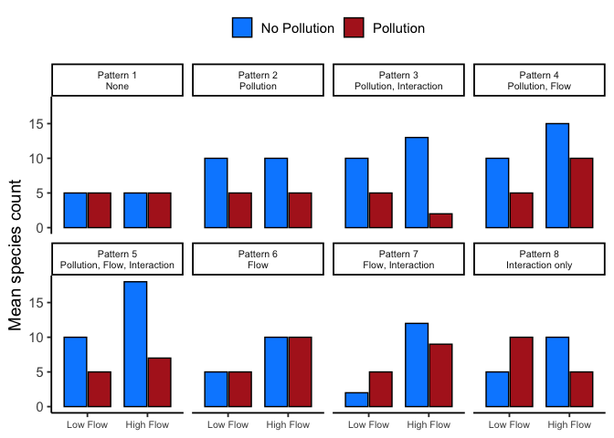
Figure 10.7 shows the same patterns in line graph form:
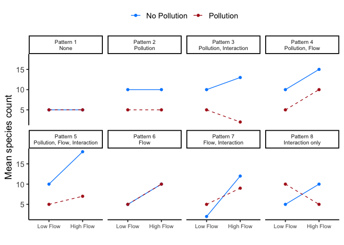
In the line graphs, interactions are easiest to see:
- Parallel lines mean no interaction (the pollution effect is the same at both flow rates).
- Crossing lines mean an interaction (the pollution effect differs by flow).
- Vertical shifts between the two lines reflect a main effect of flow.
Order of interpretation. When we conduct a two-way ANOVA, we always begin by testing the interaction term.
If the null hypothesis of no interaction is rejected, we do not interpret the main effects in isolation, because they are not consistent across conditions. Instead, we focus on the simple effects that describe how one factor behaves at each level of the other. Report simple effects (A at each level of B, or vice versa) rather than standalone main effects.
If the interaction is not significant, we then examine the two main effects separately, interpreting each as an overall difference averaged across the other factor.
TipTip: Which factor goes on the x-axis?
The statistics are identical either way, since the same condition means get plotted regardless. Two rules of thumb make the picture easier to read. Put the factor with more levels on the x-axis, since one long line is easier to follow than several short, crowded ones. And put whichever factor is your main scientific interest there too, since readers compare points along an axis more naturally than separate colored lines.
10.8 Interpreting main effects and interactions
It’s convenient to think of a main effect as one manipulation’s consistent influence. An interaction complicates that picture: it means the effect of one IV depends on another, so by definition, some main effect isn’t behaving consistently across conditions.
Why interactions matter. In our stream example, pollution reduces species count most under low flow and less under high flow. The pollution effect is not constant across flow rates, so the average “main effect” of pollution can mislead if read without context.
How to read it.
- Look for non-parallel or crossing lines. That signals that simple effects differ across levels of the other factor.
- Report the pattern using simple effects: e.g., “Pollution reduced species count sharply under low flow, and only slightly under high flow.”
- If you must report a main effect, qualify it: “There was a main effect of pollution, but it varied by flow rate.”
ImportantResults reporting: factorial ANOVA
Lead with the interaction, then give the simple effects, then report the main effects only with their qualification attached. Every effect gets its own effect size, labeled so the reader knows whether it is partialed.
The effect of pollution on macroinvertebrate species count depended on flow rate, F(1, 16) = 9.03, p = .008, \(\eta_p^2 = 0.36\). Under low flow, polluted channels supported 6.0 fewer species than unpolluted ones (3.6 vs. 9.6); under high flow that gap narrowed to 2.6 species (10.0 vs. 12.6). Both main effects were also significant, pollution F(1, 16) = 57.78, p < .001, \(\eta_p^2 = 0.78\), and flow F(1, 16) = 69.03, p < .001, \(\eta_p^2 = 0.81\), but each should be read in light of the interaction: pollution costs a stream far more species when the water is moving slowly.
Here are two generalized examples to help you make sense of these issues:
10.8.1 A consistent main effect and an interaction
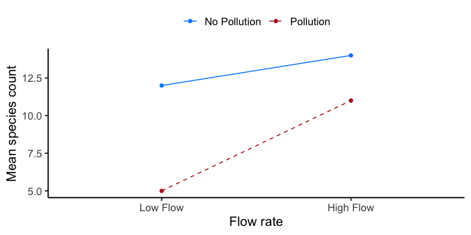
Figure 10.8 shows both a main effect and an interaction. Unpolluted channels sit above polluted ones at both flow rates, that’s the main effect. But the size of that gap is larger under low flow (12 vs. 5) than under high flow (14 vs. 11), so there’s an interaction too.
There was a main effect of pollution, qualified by a Pollution × Flow interaction: the size of the pollution effect changed with flow rate, larger under low flow and smaller under high flow. That qualification doesn’t mean the main effect isn’t real. Pollution is associated with lower species counts fairly consistently; flow changes how much lower, not the direction.
10.8.2 An “averaged” main effect that’s actually driven by an interaction
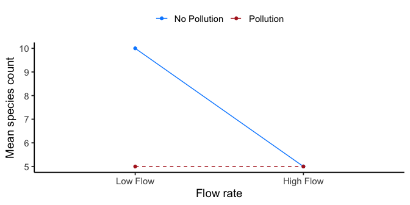
Figure 10.9 shows a starker 2x2 pattern: a large difference between polluted and unpolluted channels under low flow, and no difference at all under high flow, an interaction visible at a glance.
Yet an ANOVA run on this data can still report a significant main effect of pollution. Averaged across flow rates, unpolluted channels give \((10+5)/2=7.5\) species and polluted channels give \(5\), a main-effect difference of 2.5. That number is real, but it doesn’t describe what pollution actually does: it removes 5 species under low flow and none under high flow, not 2.5 everywhere. The “main effect” here is an artifact of averaging over a strong interaction, not a description of anything pollution is doing in general.
There was a main effect of pollution, but it was entirely qualified by a Pollution × Flow interaction: the pollution effect was large under low flow and effectively zero under high flow. In a case like this, it’s fair to doubt whether pollution has a general effect on species count at all. It may only do damage under specific conditions, in combination with other factors, rather than on its own.
10.9 More complicated designs
Up until now we have focused on the simplest case for factorial designs, the 2x2 design, with two IVs, each with 2 levels. It is worth spending some time looking at a few more complicated designs and how to interpret them.
10.9.1 3x2 design
This design works exactly like the 2x2 you already know, it just adds one more level to one factor. The test structure is the same (two main effects and one interaction). What changes is how easy it is to interpret the interaction.
Let’s expand our stream example. Suppose we examine macroinvertebrate species count (DV) under two pollution conditions (no pollution vs. pollution) across three flow rates (low, medium, high).
- The main effect of pollution tests whether, on average, polluted and unpolluted channels differ in species count across all flow rates.
- The main effect of flow tests whether mean species count differs among flow rates.
- The interaction tests whether the pollution effect (unpolluted − polluted) changes with flow rate.
In a 2x2 design, you can easily spot interactions by looking for non-parallel lines. In a 3x2, it’s still the same idea; but with three points per line, patterns get trickier to read. The statistical test is identical, but interpretation requires more care.
You have three hypotheses in a 3x2 factorial design:
H₁: Main effect of Flow
- Null (\(H_{0,1}\)): \(\mu_{\text{Low}} = \mu_{\text{Medium}} = \mu_{\text{High}}\)
- Alternative (\(H_{a,1}\)): At least one flow rate mean differs from the others.
H₂: Main effect of Pollution
- Null (\(H_{0,2}\)): \(\mu_{\text{NoPoll}} = \mu_{\text{Poll}}\)
- Alternative (\(H_{a,2}\)): Mean species count differs between polluted and unpolluted channels.
H₃: Pollution × Flow interaction
- Null (\(H_{0,3}\)): The pollution effect is the same across all flow rates. \([ (\mu_{\text{NoPoll,Low}}-\mu_{\text{Poll,Low}}) = (\mu_{\text{NoPoll,Med}}-\mu_{\text{Poll,Med}}) = (\mu_{\text{NoPoll,High}}-\mu_{\text{Poll,High}}) ]\)
- Alternative (\(H_{a,3}\)): The pollution effect differs across flow rates (i.e., at least one difference of differences is not equal).
Remember, this is far better than running two separate single factor ANOVAs that contrast pollution effects at each flow rate, because you have more statistical power (higher degrees of freedom) for the tests of interest, and you get a formal test of the interaction between factors which is often scientifically interesting.
We might expect data like shown in Figure 10.10:
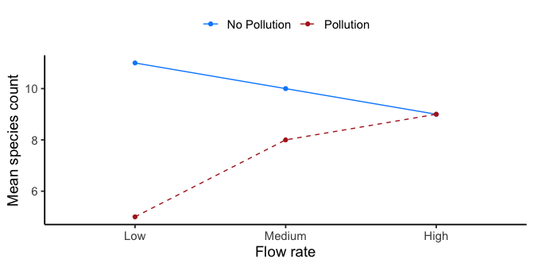
The figure shows some pretend means in all conditions. Let’s talk about the main effects and interaction.
Main Effect of Pollution: The main effect of pollution is evident. Averaged across flow rates, unpolluted channels support higher species counts (10 vs. 7.3). The “No Pollution” line sits above the “Pollution” line at low and medium flow, and the two coincide at high flow.
Main Effect of Flow: There is a main effect of flow as well. Averaged over pollution condition, species counts are lowest at low flow (8) and higher at medium and high flow (9 each).
Interaction Between Pollution and Flow: Is there an interaction? Yes. Remember, an interaction occurs when the effect of one IV depends on the levels of another. The pollution gap is 6 species at low flow, 2 at medium, and 0 at high. So the size of the pollution effect changes with flow rate, which is also why the pollution main effect above describes no single flow condition well. You would have to conduct an inferential test on the interaction term to see if these differences were likely or unlikely to be due to sampling error.
If there was no interaction and no main effect of flow, we would see something like the pattern in Figure 10.11.
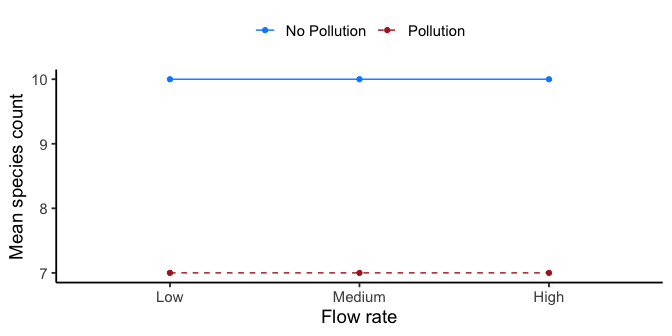
What would you say about the interaction if you saw the pattern in Figure 10.12?
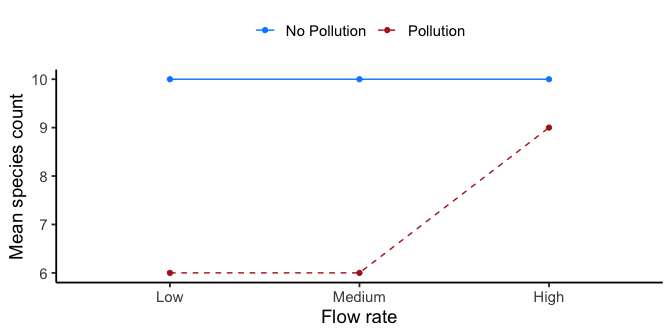
The correct answer is that there is evidence in the means for an interaction. Remember, we are measuring the pollution effect three times, once at each flow rate. The pollution effect is the same at low and medium flow, but it is much smaller at high flow. The size of the pollution effect depends on the level of the flow IV, so here again there is an interaction.
10.10 Designs Beyond This Course
Once you understand the 2x2 logic, everything else in factorial ANOVA builds from the same foundation. But complexity grows quickly, both in the number of effects and in how hard they are to interpret.
10.10.1 2×2×2 (Three-Factor) Designs
A 2×2×2 design includes three independent variables, each with two levels. That creates:
- three main effects (one per variable)
- three two-way interactions (A×B, A×C, B×C)
- one three-way interaction (A×B×C)
You can think of it as two 2×2 plots side-by-side; one for each level of the third variable.
A three-way interaction means that one of the two-way interactions changes across the third variable. For example, the pollution × flow interaction might look different in summer than in winter.
That’s all you really need to know: interactions can themselves interact. The math is identical in structure, but the number of effects grows fast, and the graphs become difficult to interpret. In applied research, most studies stop at two factors unless there’s a strong reason to add more.
10.10.2 Mixed Designs
Sometimes one factor is between-subjects (e.g., different sites or treatments) and another is within-subjects (e.g., repeated measures over time). This is called a mixed design.
The interpretation of main effects and interactions is the same, but the error terms used in the F-tests differ, and the data structure must account for repeated measures. These models are important in longitudinal and environmental time-series studies, but they’re beyond our current scope.
Takeaway: Factorial ANOVA can handle almost any experimental structure, but interpretability drops as factors multiply. Start simple: use only the number of factors needed to answer your scientific question clearly.
10.11 Chapter Summary
Why it matters. Single-factor designs can tell you whether something has an effect. Factorial designs tell you what changes that effect, which is usually the more interesting scientific question, and often the more realistic one for environmental systems where drivers act together. Getting the numbers is only half the job. An interaction changes what every other term in the table means, so interpretation has to be part of the analysis rather than a step you tack on afterward.
Core ideas
- Fully crossed means every combination. A factorial design pairs every level of each IV with every level of the others. The notation says the structure: 2×2 is four conditions, 3×2 is six.
- A 2×2 tests three things. One main effect per factor, plus their interaction. That means three null hypotheses, and you should be able to state all three in plain language before running anything.
- An interaction is a difference between differences. It asks whether the effect of one factor changes across levels of another. That framing is what the arithmetic is actually computing, and you can compute it directly with a paired \(t\)-test on difference scores.
- The partition extends the one-way logic. \(SS_\text{Total}\) now splits into each main effect, the interaction, and error. Working one table through by hand shows that the interaction term is the only genuinely new piece.
- Three tests, three effect sizes. \(\eta^2\) divides each effect’s \(SS\) by \(SS_\text{Total}\); partial \(\eta_p^2\) divides it by that effect plus error. Partial values are always larger and do not sum to 1, so label which one you are reporting. A significant effect can still be a small one, which is exactly the case for this chapter’s interaction.
- Read the interaction first. If it’s significant, do not interpret the main effects on their own, because they are not consistent across conditions. Report simple effects instead: what factor A does at each level of B. Only when the interaction is not significant do the main effects stand on their own.
- Learn to read the picture. In a line plot, parallel lines mean no interaction, crossing or diverging lines mean an interaction, and vertical separation between lines means a main effect. There are eight possible patterns in a 2×2, and recognizing them by eye is faster than parsing the table.
- An averaged main effect can be an artifact. A factor that matters a lot in one condition and not at all in another will still produce a “significant main effect” once you average across conditions. That number is real arithmetic, but it describes something that never happens in either condition.
- Bigger designs, same tests, harder reading. A 3×2 has the same three tests as a 2×2, but three points per line are harder to read than two. Beyond that, a three-factor design brings three main effects, three two-way interactions, and a three-way interaction, and interpretability falls off fast. Use only as many factors as your question actually needs.